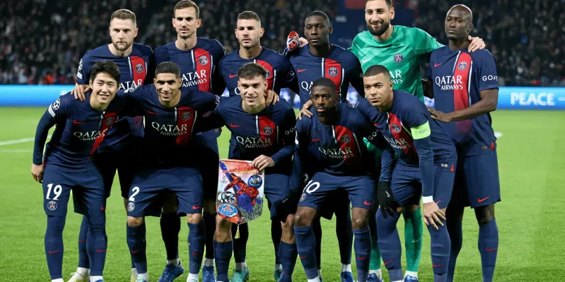

Qui suis-je ?

Je m'appelle Jeffrey Lawson, Je suis étudiant à l'ESSEC Business School en Global BBA, en 4e année. Je suis aussi passionné par la High-Tech et les voitures. J'ai codé ce site grâce au cours du Wagon.
Découvrir le WagonL'entrepreneur qui m'inspire le plus
Steve Jobs
Steve Jobs était un entrepreneur et inventeur américain, co-fondateur d'Apple Inc., l'une des entreprises les plus innovantes et influentes dans le domaine de la technologie.
Ce qui rend Steve Jobs particulièrement remarquable, c'est sa vision unique de la technologie et du design, sa capacité à anticiper et à façonner les désirs des consommateurs avant même qu'ils ne les expriment.
Mon club de Foot préféré
 Paris Saint-GermainDepuis que je regarde le foot, je supporte le Paris Saint-Germain. Ce club m'a procuré beaucoup d'émotion (pour le meilleur comme pour le pire).
Mes voyages
🇫🇷 🇺🇸 🇬🇧 🇮🇹 🇧🇯 🇨🇮 🇸🇬
J'ai toujours aimé voyager, découvrir de nouvelles cultures et je pense que
cela m'aide à mieux comprendre le monde dans lequel nous vivons. J'ai déjà visité plusieurs
régions en France, je suis déjà allé aux USA, au Royaume-Uni, en Italie, en Côte d'Ivoire, Bénin, Togo et j'espère découvrir bientôt d'autres pays !
Dans le cadre de mes études, j'ai eu l'opportunité incroyable d'être expatrié à Singapour, une expérience qui m'a profondément marqué et enrichi. Ce séjour à Singapour a été une véritable révélation pour moi, m'ouvrant les portes de l'Asie, une région du monde fascinante par sa diversité culturelle, son dynamisme et sa capacité à innover.